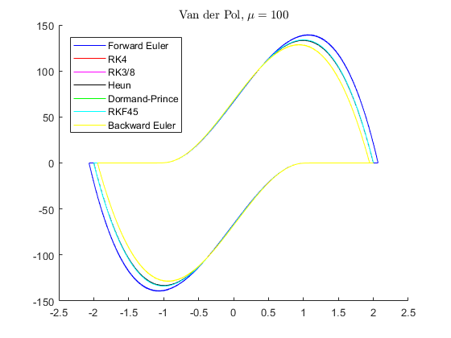

Contents
- Collection of solvers
- Test 1 : A very stiff system
- Test 2 : Lorenz dynamics
- Test 3 : Van der Pol oscillator
- Test 4 : A simple sine wave
- Test 5 : A special test to campare Forward Euler and Backward Euler
- Some ODES that we can use to test the solvers
- Forward Euler method
- Fourth oder Runge-Kutta
- Runge-Kutta 3/8 method
- Heun's method
- Dormand-prince method
- The Runge-Kutta-Fehlberg method (RKF45)
- The Backward-Euler method
Collection of solvers
For an ODE:
The solution takes a form of
clc close all clear all
Test 1 : A very stiff system
disp('Running Test 1 ...') [ta, ya] = feuler(@myode1, 1, 0, 0.02, 0.001); [tb, yb] = rk4(@myode1, 1, 0, 0.02, 0.001); [tc, yc] = rk38(@myode1, 1, 0, 0.02, 0.001); [td, yd] = heun(@myode1, 1, 0, 0.02, 0.001); [te, ye] = dormandprince(@myode1, 1, 0, 0.02, 0.001, 1e-9); [tf, yf] = rkf45(@myode1, 1, 0, 0.02, 0.001, 1e-9); [tg, yg] = beuler(@myode1, 1, 0, 0.02, 0.001); figure hold on plot(ta, ya, 'b') plot(tb, yb, 'r') plot(tc, yc, 'm') plot(td, yd, 'k') plot(te, ye, 'g') plot(tf, yf, 'c') plot(tg, yg, 'y') legend('Forward Euler', 'RK4', 'RK3/8', 'Heun', 'Dormand-Prince', ... 'RKF45', 'Backward Euler', 'Location', 'Best'); title('Stiff ODE, $\dot{y} = -1000y$', 'interpreter', 'latex');
Running Test 1 ...

Test 2 : Lorenz dynamics
disp('Running Test 2 ...') [ta, ya] = feuler(@myode2, [1 1 1]', 0, 20, 0.001); [tb, yb] = rk4(@myode2, [1 1 1]', 0, 20, 0.001); [tc, yc] = rk38(@myode2, [1 1 1]', 0, 20, 0.001); [td, yd] = heun(@myode2, [1 1 1]', 0, 20, 0.001); [te, ye] = dormandprince(@myode2, [1 1 1], 0, 20, 0.001, 1e-9); [tf, yf] = rkf45(@myode2, [1 1 1], 0, 20, 0.001, 1e-9); [tg, yg] = beuler(@myode2, [1 1 1]', 0, 20, 0.001); figure hold on plot3(ya(1,:), ya(2,:), ya(3,:), 'b'); plot3(yb(1,:), yb(2,:), yb(3,:), 'r'); plot3(yc(1,:), yc(2,:), yc(3,:), 'm'); plot3(yd(1,:), yd(2,:), yd(3,:), 'k'); plot3(ye(1,:), ye(2,:), ye(3,:), 'g'); plot3(yf(1,:), yf(2,:), yf(3,:), 'c'); plot3(yg(1,:), yg(2,:), yg(3,:), 'y'); legend('Forward Euler', 'RK4', 'RK3/8', 'Heun', 'Dormand-Prince', ... 'RKF45', 'Backward Euler', 'Location', 'Best'); title('Lorenz, $\sigma = 10, \beta = 8/3, \rho = 28$', 'interpreter', 'latex');
Running Test 2 ...
Test 3 : Van der Pol oscillator
disp('Running Test 3 ...') [ta, ya] = feuler(@myode3, [2 0]', 0, 1000, 0.001); [tb, yb] = rk4(@myode3, [2 0]', 0, 1000, 0.001); [tc, yc] = rk38(@myode3, [2 0]', 0, 1000, 0.001); [td, yd] = heun(@myode3, [2 0]', 0, 1000, 0.001); [te, ye] = dormandprince(@myode3, [2 0]', 0, 1000, 0.001, 1e-9); [tf, yf] = rkf45(@myode3, [2 0]', 0, 1000, 0.001, 1e-9); [tg, yg] = beuler(@myode3, [2 0]', 0, 1000, 0.001); figure hold on plot(ya(1,:), ya(2,:), 'b'); plot(yb(1,:), yb(2,:), 'r'); plot(yc(1,:), yc(2,:), 'm'); plot(yd(1,:), yd(2,:), 'k'); plot(ye(1,:), ye(2,:), 'g'); plot(yf(1,:), yf(2,:), 'c'); plot(yg(1,:), yg(2,:), 'y'); legend('Forward Euler', 'RK4', 'RK3/8', 'Heun', 'Dormand-Prince', ... 'RKF45', 'Backward Euler', 'Location', 'Best'); title('Van der Pol, $\mu = 100$', 'interpreter', 'latex');
Running Test 3 ...
Test 4 : A simple sine wave
disp('Running Test 4 ...') [ta, ya] = feuler(@myode4, -1, 0, 10, 0.001); [tb, yb] = rk4(@myode4, -1, 0, 10, 0.001); [tc, yc] = rk38(@myode4, -1, 0, 10, 0.001); [td, yd] = heun(@myode4, -1, 0, 10, 0.001); [te, ye] = dormandprince(@myode4, -1, 0, 10, 0.001, 1e-9); [tf, yf] = rkf45(@myode4, -1, 0, 10, 0.001, 1e-9); [tg, yg] = beuler(@myode4, -1, 0, 10, 0.001); figure hold on plot(ta, ya, 'b'); plot(tb, yb, 'r'); plot(tc, yc, 'm'); plot(td, yd, 'k'); plot(te, ye, 'g'); plot(tf, yf, 'c'); plot(tg, yg, 'y') legend('Forward Euler', 'RK4', 'RK3/8', 'Heun', 'Dormand-Prince', ... 'RKF45', 'Backward Euler', 'Location', 'Best'); title('$\dot{y} = y * sin(t)$', 'interpreter', 'latex');
Running Test 4 ...

Test 5 : A special test to campare Forward Euler and Backward Euler
The test is taken from https://web.mit.edu/10.001/Web/Course_Notes/Differential_Equations_Notes/node3.html
Forward Euler becomes unstable when $h>0.2$. Backward Euler is unconditionally stable.
disp('Running Test 5 ...') h = [0.2 0.1 0.05 0.01 0.001]; figure hold on for k = 1 : length(h) [t, y] = feuler(@myode5, 1, 0, 3, h(k)); plot(t, y) end legend(num2str(h), 'Location', 'best'); title ('Forward Euler for $\dot{y} = -10y$', 'interpreter', 'latex') figure hold on for k = 1 : length(h) [t, y] = beuler(@myode5, 1, 0, 3, h(k)); plot(t, y) end legend(num2str(h), 'Location', 'best'); title ('Backward Euler for $\dot{y} = -10y$', 'interpreter', 'latex')
Running Test 5 ...
Some ODES that we can use to test the solvers
% ------ A very stiff ODE ------ function ydot = myode1(t,y) ydot = -1000*y; end % ------ Lorenz dynamics ------ function ydot = myode2(t,y) sigma = 10; beta = 8/3; rho = 28; ydot = [sigma * (y(2) - y(1)); y(1) * (rho - y(3)) - y(2); y(1) * y(2) - beta * y(3)]; end % ------ Van der Pol oscillator ------ function ydot = myode3(t,y) Mu = 100; ydot = [y(2); Mu*(1-y(1)^2)*y(2)-y(1)]; end % ------ A simple sine wave ------ function ydot = myode4(t,y) ydot = y*sin(t); end % ------ An ODE wih a decaying solution ------ function ydot = myode5(t,y) ydot = -10*y; end % --------------------------------------------
Forward Euler method
function [t, y] = feuler(odefun, ... % The ODE function y0, ... % Initial states ts, ... % Start time tf, ... % End time h) % Step time t = ts:h:tf; y = zeros(length(y0),length(t)); y(:,1) = y0; for k = 2 : length(t) ydot = odefun(t(k), y(:,k-1)); y(:,k) = y(:,k-1)+ydot.*h; end endFourth oder Runge-Kutta
function [t, y] = rk4(odefun, ... % The ODE function y0, ... % Initial states ts, ... % Start time tf, ... % End time h) % Step time t = ts:h:tf; y = zeros(length(y0),length(t)); y(:,1) = y0; for k = 2 : length(t) yn = y(:,k-1); tn = t(k-1); k1 = h * odefun(tn, yn); k2 = h * odefun(tn + h / 2 , yn + k1 / 2); k3 = h * odefun(tn + h / 2, yn + k2 / 2); k4 = h * odefun(tn + h, yn + k3); y(:,k) = yn + k1 / 6 + k2 / 3 + k3 / 3 + k4 / 6; end endRunge-Kutta 3/8 method
function [t, y] = rk38(odefun, ... % The ODE function y0, ... % Initial states ts, ... % Start time tf, ... % End time h) % Step time t = ts:h:tf; y = zeros(length(y0),length(t)); y(:,1) = y0; for k = 2 : length(t) yn = y(:,k-1); tn = t(k-1); k1 = h * odefun(tn, yn); k2 = h * odefun(tn + h / 3, yn + k1 / 3); k3 = h * odefun(tn + h * 2 / 3, yn + - k1 / 3 + k2); k4 = h * odefun(tn + h, yn + k1 - k2 + k3); y(:,k) = yn + 1 / 8 * k1 + 3 / 8 * k2 + 3 / 8 * k3 + 1 / 8 * k4; end endHeun's method
function [t, y] = heun(odefun, ... % The ODE function y0, ... % Initial states ts, ... % Start time tf, ... % End time h) % Step time t = ts:h:tf; y = zeros(length(y0),length(t)); y(:,1) = y0; for k = 2 : length(t) yn = y(:,k-1); tn = t(k-1); k1 = h * odefun(tn, yn); k2 = h * odefun(tn + h, yn + k1); y(:,k) = yn + 1 / 2 * k1 + 1 / 2 * k2; end endDormand-prince method
This is an adaptive method with variable time stepfunction [t, y] = dormandprince(odefun, ... % The ODE function y0, ... % Initial states ts, ... % Start time tf, ... % End time h, ... % Step time TOL) % Local error tollerance y(:,1) = y0; k = 2; t = ts; while t < tf yn = y(:,k-1); tn = t(k-1); k1 = h * odefun(tn, yn); k2 = h * odefun(tn+h/5, yn+k1/5); k3 = h * odefun(tn+h*3/10, yn+k1*3/40 + k2*9/40); k4 = h * odefun(tn+h*4/5, yn + k1*44/45 - k2*56/15 + k3*32/9); k5 = h * odefun(tn+h*8/9, yn + k1*19372/6561 - k2*25360/2187 + ... k3*64448/6561 - k4*212/729); k6 = h * odefun(tn+h, yn + k1*9017/3168 - k2*355/33 + ... k3*46732/5247 + k4*49/176 - k5*5103/18656); k7 = h * odefun(tn+h, yn + k1*35/384 + k3*500/1113 + k4*125/192 - ... k5*2187/6784 + k6*11/84); Y = yn + 35/384*k1 + 500/1113*k3 + 125/192*k4 - 2187/6784*k5 + ... 11/84*k6; Z = yn + 5179/57600*k1 + 7571/16695*k3 + 393/640*k4 - ... 92097/339200*k5 + 187/2100*k6 + 1/40*k7; E = norm(Y-Z); % local error estimation h = 0.9 * h * (TOL/E)^(1/5); y(:,k) = Y; t(k) = t(k-1) + h; k = k + 1; end endThe Runge-Kutta-Fehlberg method (RKF45)
This is an adaptive method with variable time step.
function [t, y] = rkf45(odefun, ... % The ODE function y0, ... % Initial states ts, ... % Start time tf, ... % End time h, ... % Step time TOL) % Local error tollerance y(:,1) = y0; k = 2; t = ts; while t < tf yn = y(:,k-1); tn = t(k-1); k1 = h * odefun(tn, yn); k2 = h * odefun(tn+h/4, yn+k1/4); k3 = h * odefun(tn+h*3/8, yn+k1*3/32 + k2*9/32); k4 = h * odefun(tn+h*12/13, yn + k1*1932/2197 - k2*7200/2197 + ... k3*7296/2197); k5 = h * odefun(tn+h, yn + k1*439/216 - 8*k2 + k3*3680/513 - ... k4*845/4104); k6 = h * odefun(tn+h/2, yn - k1*8/27 + k2*2 - k3*3544/2565 + ... k4*1859/4104 - k5*11/40); Y = yn + 25/216*k1 + 1408/2565*k3 + 2197/4104*k4 - 1/5*k5; Z = yn + 16/135*k1 + 6656/12825*k3 + 28561/56430*k4 - 9/50*k5 + ... 2/55*k6; E = norm(Y-Z); % local error estimation h = 0.9 * h * (TOL/E)^(1/5); y(:,k) = Y; t(k) = t(k-1) + h; k = k + 1; end endThe Backward-Euler method
function [t, y] = beuler(odefun, ... % The ODE function y0, ... % Initial states ts, ... % Start time tf, ... % End time h) % Step time t = ts:h:tf; y = zeros(length(y0),length(t)); I = eye(length(y0)); y(:,1) = y0; for k = 1 : length(t)-1 y1 = y(:,k); F = build_F(odefun, t(k), y(:,k), y1, h); y2 = y1 - inv(I-h*Jacobian(odefun, t(k), y1)) * F; while (norm(y2-y1) > 0.0001) y1 = y2; F = build_F(odefun, t(k), y(:,k), y1, h); y2 = y1 - inv(I-h*Jacobian(odefun, t(k), y1)) * F; end y(:,k+1) = y2; end end % build the equation: F = 0 function F = build_F(f, t, y1, y2, h) F = y2 - y1 - h*f(t, y2); end % Calculate Jacobian of function f at given x % Complex-Step Derivative Approximation (CSDA) Method function DF = Jacobian(f, t, x, epsilon) if nargin < 4 epsilon = 1e-5; end epsilon_inv = 1/epsilon; nx = length(x); % Dimension of the input x; % Do perturbation for k = 1 : nx xplus = x; xplus(k) = x(k) + 1i*epsilon; DF(:, k) = imag(f(t, xplus)) .* epsilon_inv; end end % ------------------------------------------------------------------------